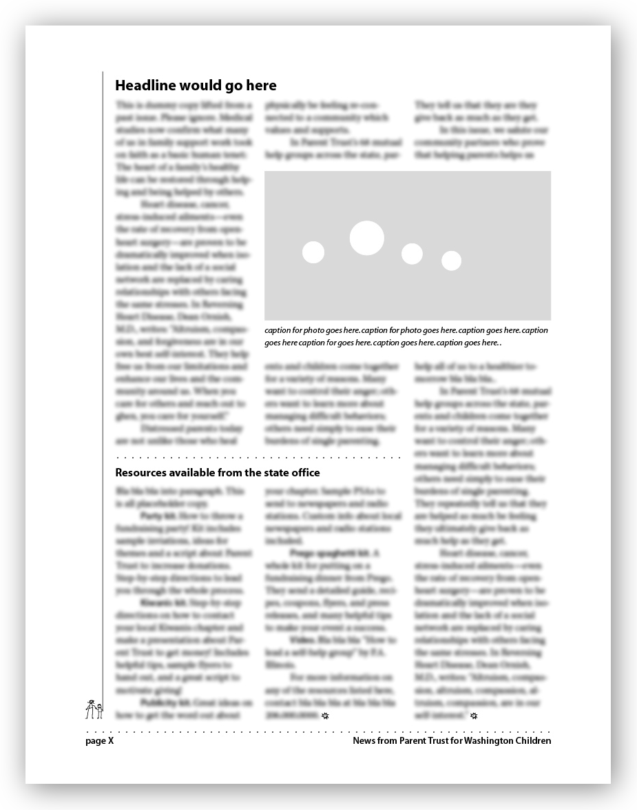
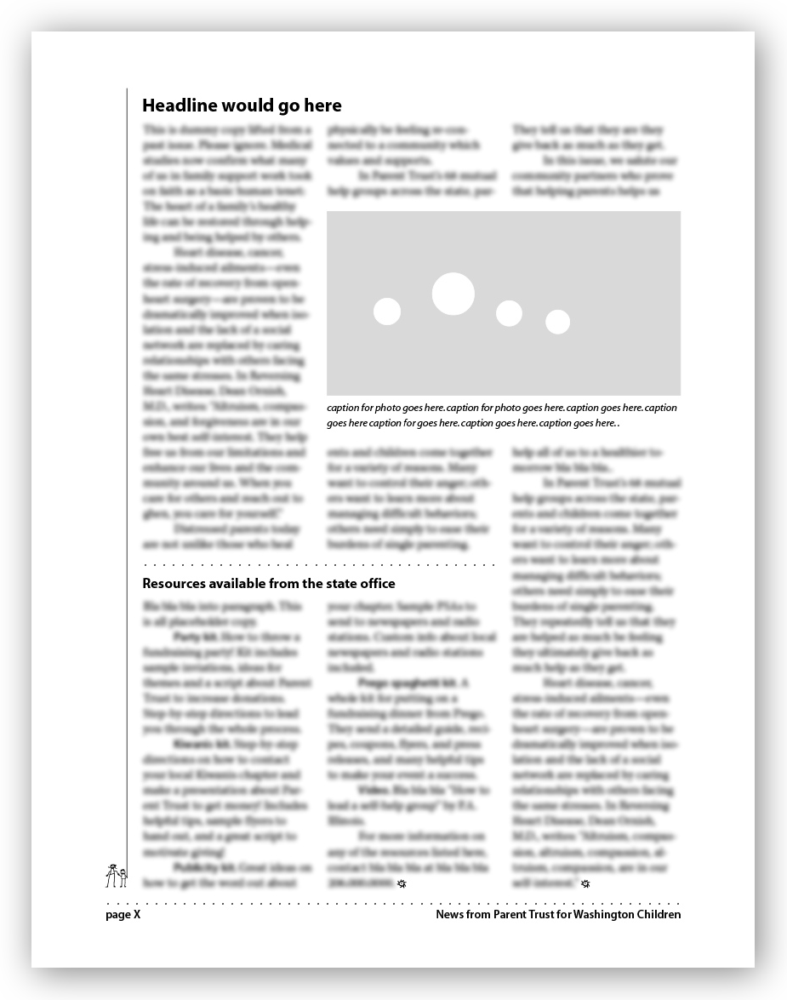
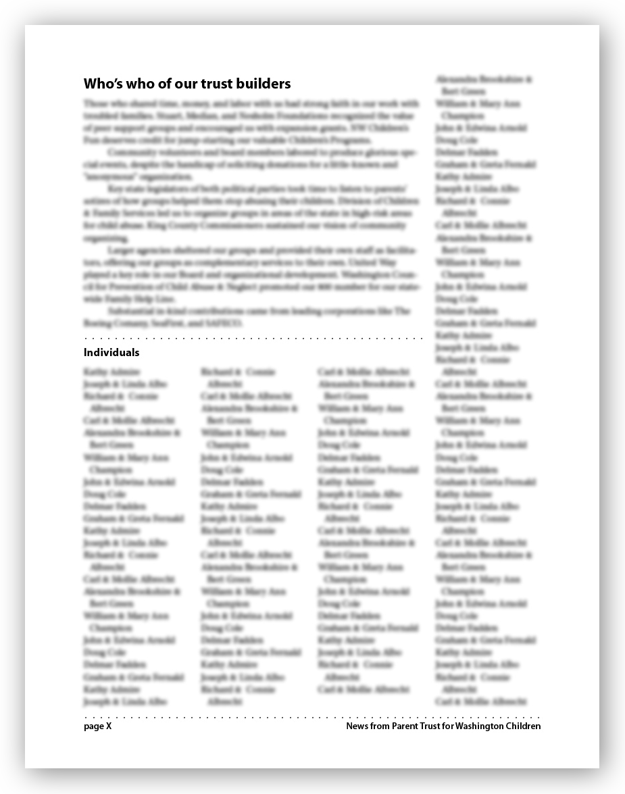
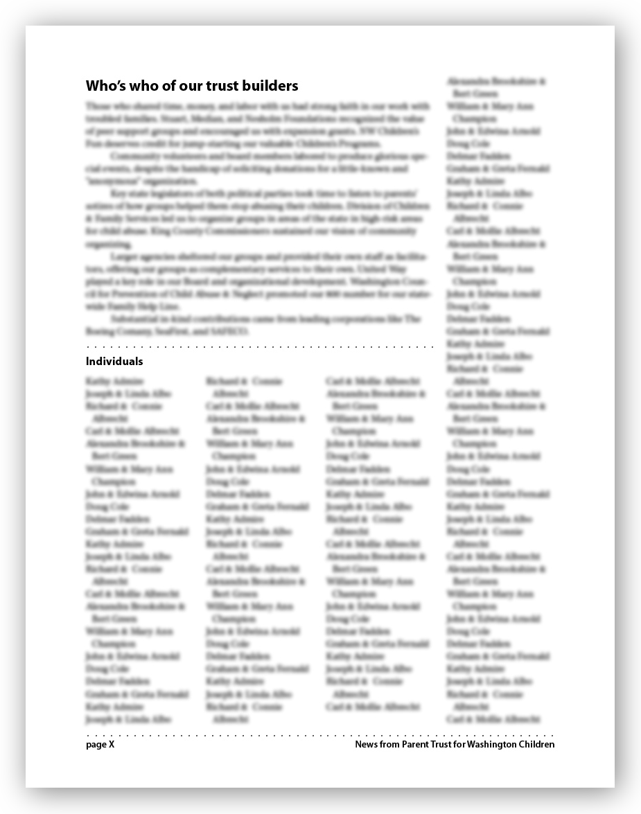
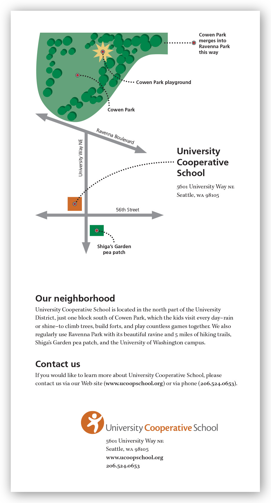
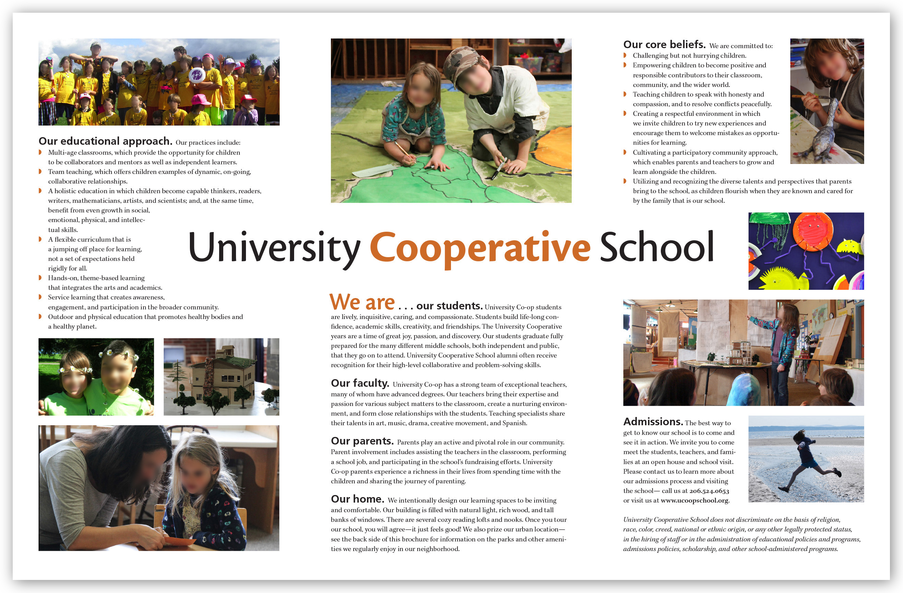
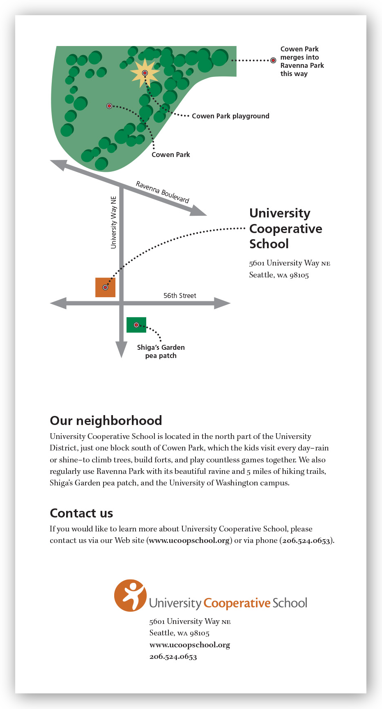
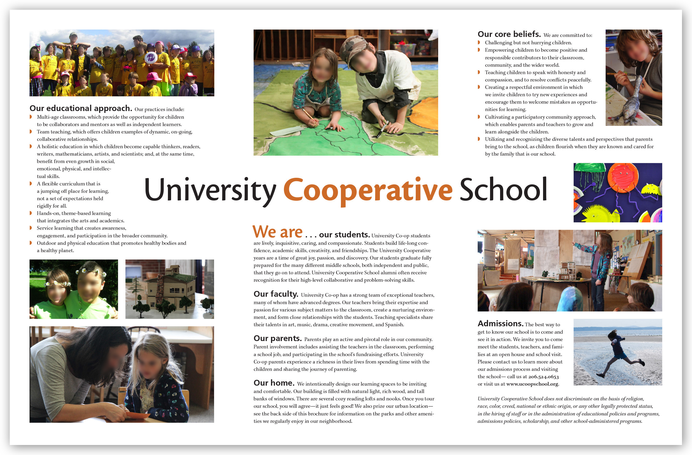

DESIGN | PUBLISHING SKILLS
I have twenty+ years experience using layout and design tools including
- MadCap Flare. At Rad Power Bikes I implemented single-source authoring to manage owner’s manual content across Rad's ebike suite, optimize custom templates for both Web-based (mobile-first) and print-based output, centralize shared content across manuals, and streamline localization.
- Adobe Creative Suite/Cloud (especially InDesign and Photoshop). I have designed and published countless technical manuals, marketing materials, newsletters, catalogs, and more.
- Web-based publishing. I am trained as a full-stack web developer, and am proficient in HTML, CSS, Javascript, and more (this site is entirely hand-coded). See my “Web dev | CMS” page for more information.
My design work is informed by ten years at Adobe Systems, a career as a writer/editor, experience as a graphic-design magazine editor, grounding in the fine arts and non-digital layout methods (e.g., paste-up), and love for the multi-dimensional, multi-media UX of the Web. I value intuitive UX, readability, elegant and functional typography, clear visual heirarchy, and localization readiness.
Single-source authoring/publishing
Rad Power Bikes Owner's Manuals
Implemented a single-source authoring system in MadCap Flare to manage the content for print and Web-based versions of ebike manuals. Example at left is the last manual I worked on, the RadRunner 3 Plus Owner's Manual. Other manuals output from the same Flare project included owner's manuals for following models: RadRunner 2, RadRover 6 Plus, RadWagon 4, RadCity 5 Plus, RadExpand 5, RadTrike 1, and RadMission 1. A single Flare project output most of these manuals with localized information and spelling for U.S., Canada, and EU/UK. Coordinated with localization specialists to create versions in French (Canada), French (EU), German, and Dutch.
Illustrations by Jeff Anderson.
Current manuals are available via the Rad Power Bikes Help Center.

Database publishing
Database publishing involves taking structured content/data (e.g., CSV, tab-separated values, JSON), automating various edits (e.g., conditional text concatenations, formatting tags) with various tools and/or scripts, and then importing into a publishing application to automate or semi-automate layout, design, and text formatting. It’s a critical process for data-intensive works like directories and some catalogs if they are not already managed by a single-source authoring system.
I have extensive experience performing such operations with tools including Adobe Creative Suite and various spreadsheet/database tools (Smartsheet, Google Sheets, Excel, FileMaker).
Pictures here are samples from one 40-page auction catalog for University Cooperative School. I designed the layout with decorative elements cueing off the front-page illustration that was a collaboration between painter Jenny Beedon Snow and illustrator Ed Fotheringham. This catalog had to be ready to print a week after I received the data as CSV, including time for fact checking, copyediting, other review, and multiple rounds of corrections.

Newsletters
I have written, edited, or produced more newsletters than I can recall. So many grids, columns, and sidebars! Here are some samples I designed and produced.
University Cooperative School. For several years I designed, laid out, and copyedited a newsletter for an elementary school that my kids attended. It was a labor of love for a warm, fun-loving, creative, and close-knit community. Pictured here are sample pages from several different issues. The pages are in JPEG format here so that I could blur faces and names of community members, which the school requested. Click to see a full gallery.
Parent Trust for Washington Children. PTWC hired me to design a template that in-house staff could use to lay out their newsletter for donors, staff, and other constituents. The template pages shown here (click on either to see more) feature blurred placeholder copy, which was lifted from one of their past issues. I did not design the company logo shown on the first and last pages, and the organization has since changed it. The template was based on a 13-point leading grid and a 16-column master used to generate master pages for various layouts: two, three, and four columns, as explained in the documentation I provided the organization.
 

 

miscellaneous print design
Graphic ID. While serving on the board of Washington FEAST (Food allergy, Eczema, and Asthma Support Team), I redesigned their logo and other graphic-identity assets with input from other board members. Our intent was to create a friendly, practical logo that would connote healthy, enjoyable eating (not privation), avoid images of allergens, and be culturally inclusive. Pictured here are the letterhead and sample business card.

Logo and letterhead (full size and half size) shown here were for David Rush, a Seattle-based real-estate broker. The architectural element in the logo was based on the roof and lighting fixture over the front door of his home.

School brochure. Brochure for University Cooperative School. Children’s faces have been blurred for privacy reasons. I produced the back-panel map in Illustrator.

 



Real-estate marketing. One of my regular gigs has been preparing marketing materials for several real-estate agents. Below is the template I designed for my primary clients plus sample implementations. Template uses a full Swiss grid based on 14-point leading.